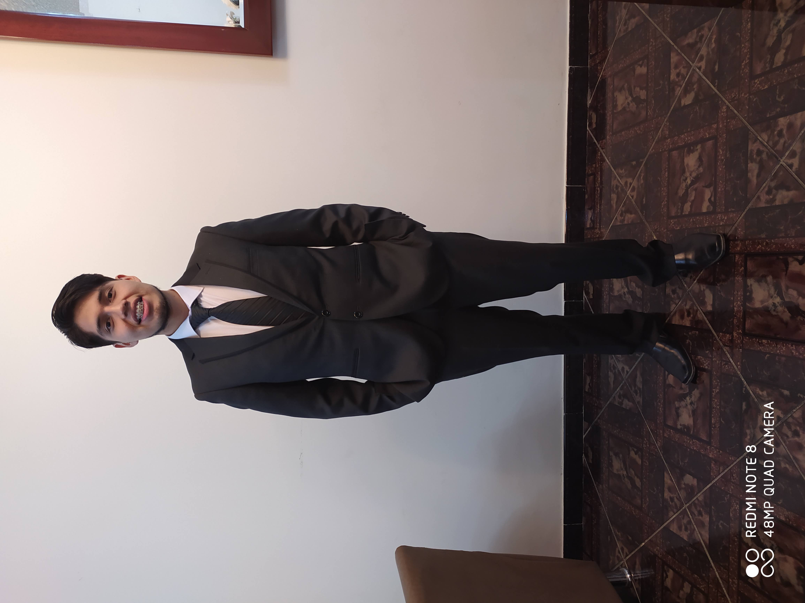

Research Assistant at Sciences Po Paris
I am a researcher working at the intersection of econometrics, causal inference, and computational methods. My work focuses on developing difference-in-differences estimators, machine learning applications for causal inference, and environmental economics.
I develop open-source statistical software used by researchers worldwide, with over 170,000 downloads. Previously, I was a Research Specialist at Princeton SPIA.
Education: M.Sc. Economics, Universidad de San Andres. B.Sc. Economics, Universidad Nacional Agraria La Molina.